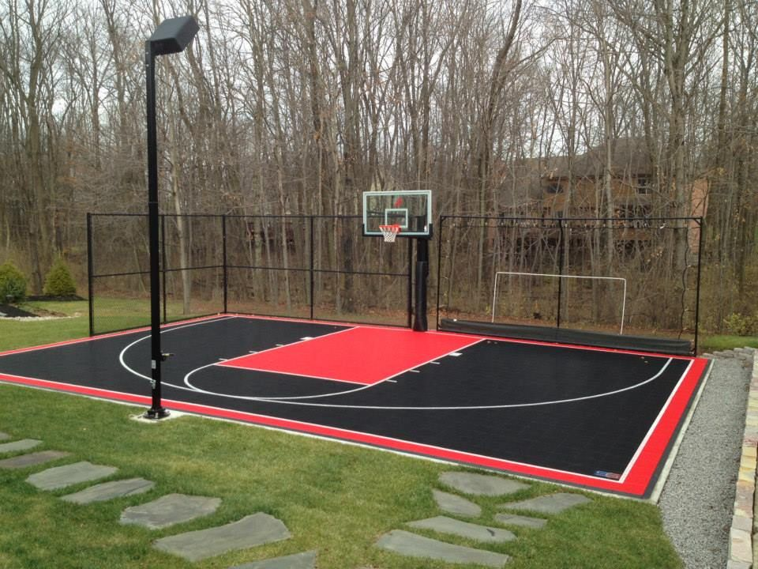
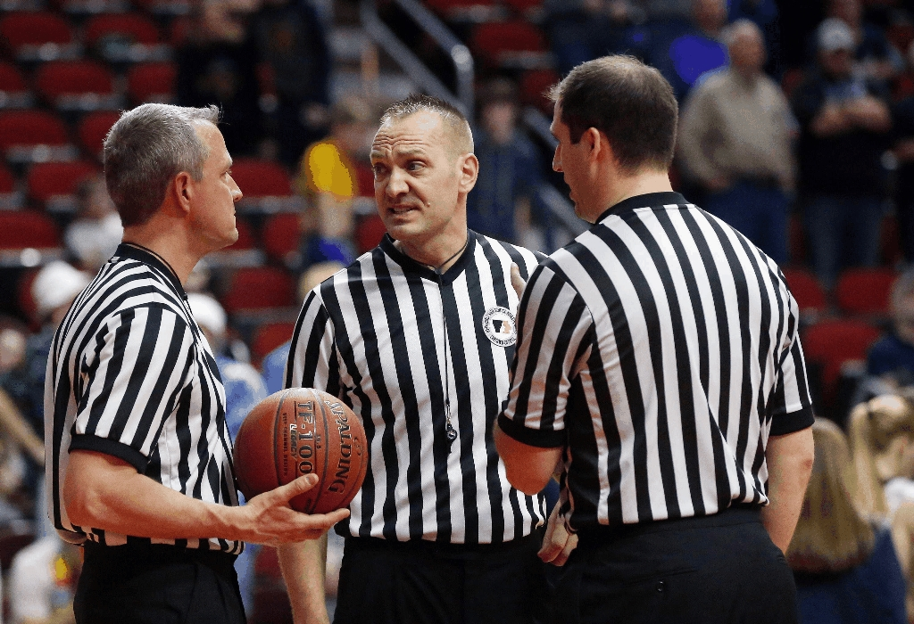
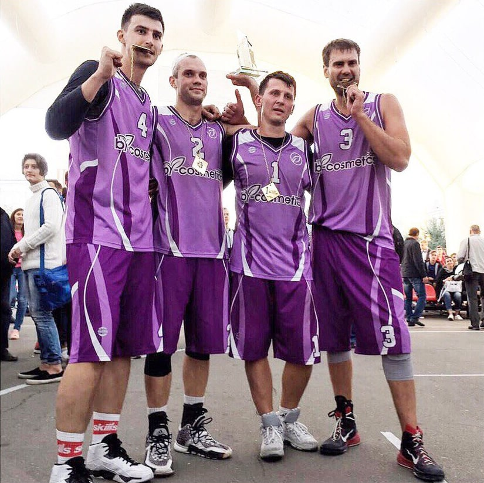

Площадка

- Площадка представляет собой половину обычной площадки для баскетбола с одной корзиной.
- Места для борьбы за подбор при штрафном броске обозначены линиями длиной 85 см и шириной 5
см и расположены так же, как на обычной площадке для баскетбола.
- Полукруга для выполнения штрафных бросков нет.
- Линия для выполнения штрафных бросков расположена на том же расстоянии от точки
— проекции центра кольца на площадку, что и на обычной баскетбольной площадке, и имеет длину 1 метр.
Судьu

- Игру может обслуживать до трех судей.
Судьи осуществляют полный контроль над игрой. Основные обязанности судей:
проведение процедуры жеребьевки в ситуации «начало игры», назначение тайм-аутов
(длительностью в 30 секунд); определение команды, имеющей право на владение мячом,
в ситуациях, когда это требуется; ведение счета игры; отсчет игрового времени; определение
ситуации «спорный мяч»; фиксирование всех нарушений (пробежка, неправильное ведение, аут и т. д.),
а также всех фолов
- Судьи осуществляют полный контроль над игрой. Основные обязанности судей:
проведение процедуры жеребьевки в ситуации «начало игры», назначение тайм-аутов
(длительностью в 30 секунд); определение команды, имеющей право на владение мячом,
в ситуациях, когда это требуется; ведение счета игры; отсчет игрового времени; определение
ситуации «спорный мяч»; фиксирование всех нарушений (пробежка, неправильное ведение, аут и т. д.),
а также всех фолов.
Команды

- Играют 2 команды. Состав команды — 3 или 4 человека. В заявке
команды на турнир может быть от 3 до 6 игроков.
- В начале игры на площадке должны быть 3 человека от команды.
- Капитаном команды может быть любой из её участников.
- Одновременно на площадке не может быть меньше 2 и больше 3 игроков одной команды.
- Если во время игры в команде осталось меньше 2 игроков, этой команде
засчитывается поражение «из-за нехватки игроков».
- Если по истечении 2 минут с момента времени начала игры (по расписанию)
в команде нет 3 игроков (неявка), этой команде засчитывается поражение «лишением права».